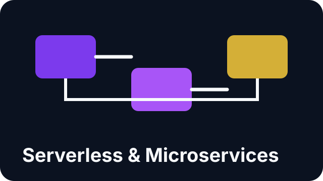

Scenario: Nonprofit Security Baseline
A nonprofit with volunteer admins needs secure cloud access without slowing operations.
- Map least-privilege roles by task
- Set MFA and alerting baselines
- Train staff using plain-language runbooks
Questions about classes, team training, partnerships, speaking requests, or student support are welcome.
Primary email: thedopecloudteacher@gmail.com
A nonprofit with volunteer admins needs secure cloud access without slowing operations.

An operations team wants to modernize apps and reduce outage risk during migration.

A school or workforce program needs cloud and AI readiness that leads to job outcomes.